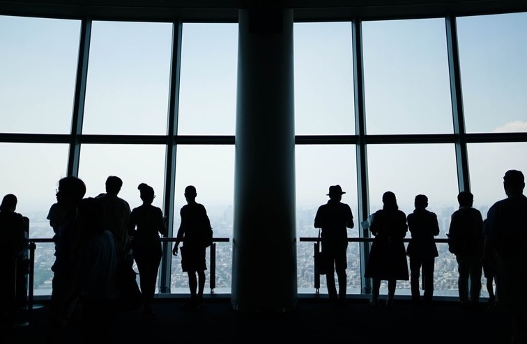

 Tokyo Skytree (TOKYO SKYTREE) is a radio tower (transmitter station) located at 1-1-2 Oshiage, Sumida-ku, Tokyo and is one of Tokyo's landmarks. The tower was completed on February 29, 2012, and opened on May 22, 2012, as a radio tower and tourist facility, and also houses tourist and commercial facilities and office buildings. It is a symbol of Tobu Railway and the Tobu Group. The nearest stations are Tokyo Skytree Station and Oshiage Station, which are directly connected to each other.